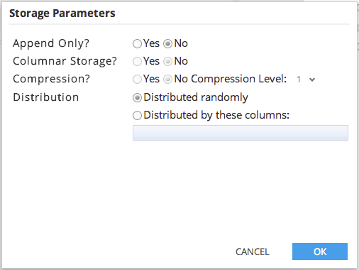

Storage Parameters
For Operators which can generate an output table, the Storage Parameters dialog allows the user to specify several additional parameters regarding storage method and compression. Currently this feature is unique to Greenplum and PostgreSQL databases.

The parameters are listed below. The default option is indicated in bold:
- Append Only? (Yes or No)
- Columnar Storage? (Yes or No) This option is enabled if and only if 'Append Only' is selected
- Compression? (Yes or No) This option is enabled if and only if 'Append Only' is selected. If the user selects 'Yes', then they are required to set the level of compression as a number between 1 and 9. The default is 1.
- Distribution Clause? (Randomly, or Distribute by) If the user selects 'Distribute by' then they are required to enter distribution clause as text, in the form of a list of columns separated by commas (the columns specified cannot be of type array).